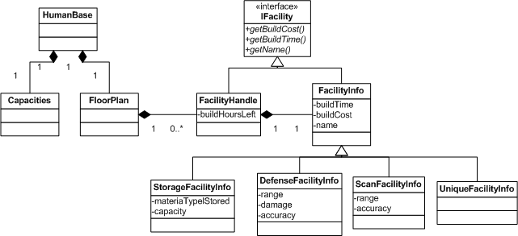

Facility
In the current design, there are 17 unique facilities, which can be grouped into 4 classes, which I have named:
- Storage
- Scan
- Defence
- Special
Storage Facilities
In simple terms, these increase the quantity of some "material" that can be "stored" in a base. The "storage" facilities are:
- Landing Pad
- Barracks Facility
- Xenomorph Holding Facility
- Storage Facility
- Psionic Training Facility
- Research Facility
- Engineering Facility
Notes on storage type
- Some people might wonder why the Psionic Training, Research and Engineering facilities are on this list. Well, the Research Facility increases the number of "working scientists" that a base can hold.
- The easiest way to model these facilities is to give the base a "capacity" for each type of "material". Then when a facility is constructed the relevant base's "capacity" is increased. (And decreased when the facility is destroyed.)
- A facility can't be destroyed if it's in use. As the "material" is owned by the base, not a facility, test is checking if destruction of the facility would reduce the base's "capacity" below the level currently present in the base.
- Beyond needing to know when a facility finishes being built, the facility does not change over time. It doesn't need to implement update(gametime).
- What about start/end of month Psi training? Answer, that's not the responsibility of the Facility. That's done in the "start of month" processing. (Aside, it's probably easier to work with "start of month", because "end of month" varies depending on the month.)
- What about research projects? Answer, the research manager is responsible for tracking them, not the facility.
Scan Facilities
These detect UFOs. The "scan" facilities are:
- Short Range Neudar
- Long Range Neudar
- Tachyon Emissions Detector
Notes on scan type
- These facilities do need to implement an update(gametime) function, because they need to check each "time period" to see if they've detected any UFOs.
- In X-COM, despite what Ufopedia says, having more than one of each type of Neudar in a base doesn't help. So, we will not allow a base to have more than one of each type of scan facility.
Defence Facilities
These facilities shoot at UFOs when UFOs try to attack a base. The defence facilities are:
- Missile Defence Array
- Laser Defence Array
- Plasma Defence Array
- GAIA Defence Array
Notes on defence type
- These facilities only come into play when a UFO is attacking the base and gets into range.
- When the attacking UFO gets into range, then each facility gets to take one shot at the UFO. (Or 2 shots if a Gravity Shield is present in the base.)
- So, defence facilities don't need to update their state with an update(gametime). They're just called as part of the sequence for an "Alien Attack on X-Corp" base.
Special Facilities
These are facilities that don't belong to a class. That is, each one is unique, with no other facility like it. The special facilities are:
- Base Access Facility
- Gravity Shield Facility
- Neural Shielding Facility
Notes on these types
- Base Access Facility: Every base must have one, and only one, of these. It must be the first facility that is built when a base is constructed, and is the core around which all other facilities are constructed. Beyond this, it adds nothing.
- Gravity Shield Facility : A base can have no more than one of these. If one is present, then each defence facility gets to twice at attacking UFOs. So no update() function is needed, we just check to see if base has one of these as part of an "Alien Attack on X-Corp".
- Neural Shielding Facility : A base can have no more than one of these. Reduces the "visibility" of a base. So needs to be called when we calculate a base's "visibility". Again, no update() function is needed.
Common Facility Behaviour
- Build cost
- Build time
- Size
- canBuild(Base& base)
- canDestroy(Base& base)
- onFinishedBuilding(Base& base)
- onDestroy(Base& base)
I'd propose the following set of classes for hooking facilities to bases.
(UML diagram attached, note that it doesn't show member functions nor all attributes for classes.)

The basic idea is that the FacilityInfo classes are flyweights, holding the "class properties" (build cost, size, etc.) and functionality, but not the instance data. Actual instances of facilities are represented by the FacilityHandle class. Which holds build state.
The Base class owns a FloorPlan and a Capacities.
The FloorPlan is responsible for managing the FacilityHandles. Really, it just keeps track of the position of the facilities in the base (probably in an array) and their build state. (As you can guess, I haven't quite figured out the exact division of responsibility between FacilityHandle and FloorPlan classes.) For performance reasons, the FloorPlan will probably also hold a list of "updateable" facilities. That is, facilities that need to get called on an update(game time). Currently it's only the scan facilities, but it might be others later.
The Capacities is responsible for tracking the "storage capacities" granted by the facilities. As discussed above in Storage Facilities.